Large Language Models : A Hands-on Approach
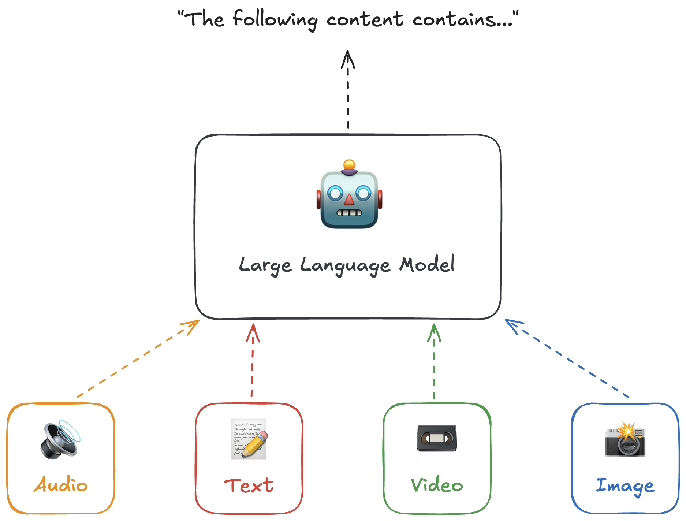
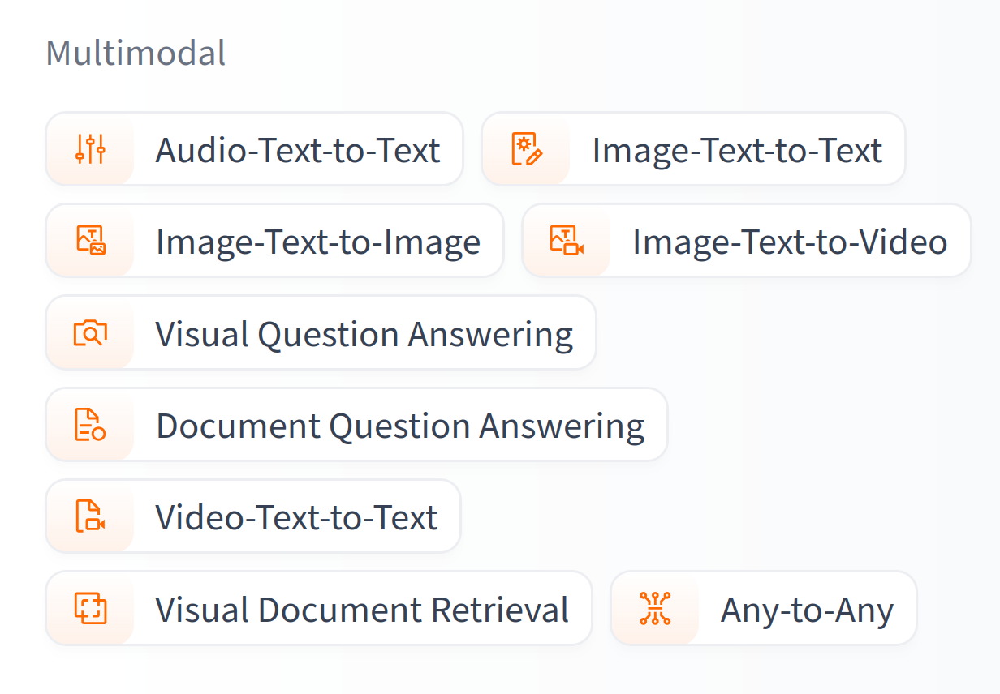
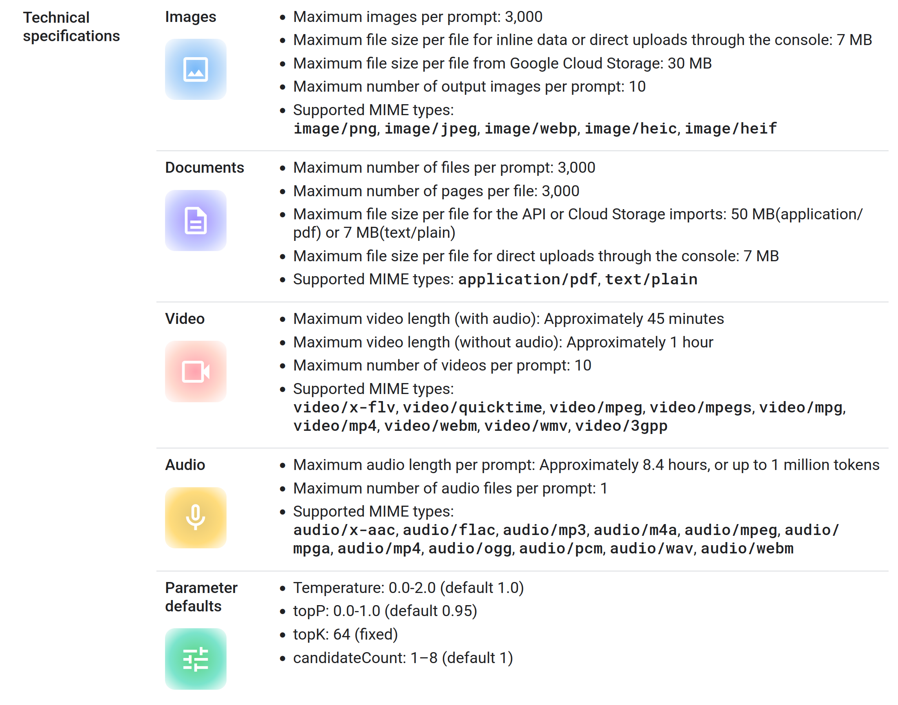
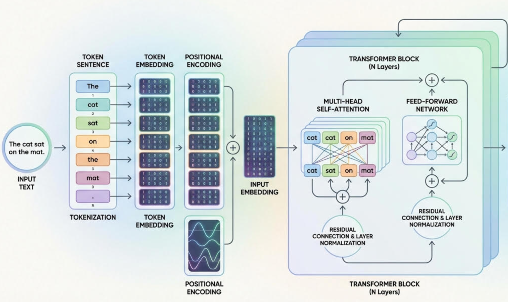
We want to know :
image_to_vectors: Image → R^{N×d}audio_to_vectors: Audio → R^{N×d}video_to_vectors: Video → R^{N×d}Go from Text LLM to Multimodal LLM by adding three components:
| Problem | Image | Audio |
|---|---|---|
| Encode | ViT (patchify pixels) | Whisper / AuT (spectrogram + conv + transformer) |
| Align | CLIP / SigLIP contrastive pretraining | Supervised ASR pretraining |
| Fuse | MLP projector + concat (LLaVA) | MLP projector + concat (Qwen Audio) |
[height, width, 3] of pixel intensities (RGB).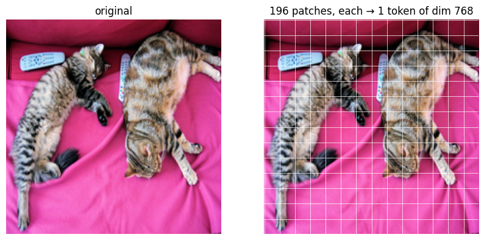
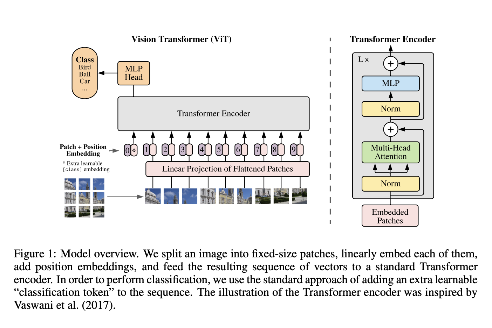
(image, caption) pairs scraped from the web.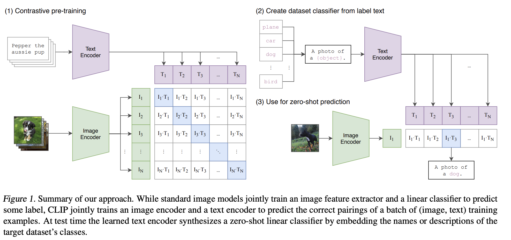
Demo : CLIP zero-shot classification
CLIP’s softmax loss requires every example to know about every other example
SigLIP (Zhai et al., Google, ICCV 2023) replaces softmax with a per-pair sigmoid
\[\mathcal{L}_{\text{SigLIP}} = -\sum_{i,j} \log \sigma\left(y_{ij} \cdot (t \cdot \mathbf{x}_i \cdot \mathbf{y}_j + b)\right)\]
where \(y_{ij} = +1\) for positives, \(-1\) for negatives, and \((t, b)\) are learnable.
What’s Next :
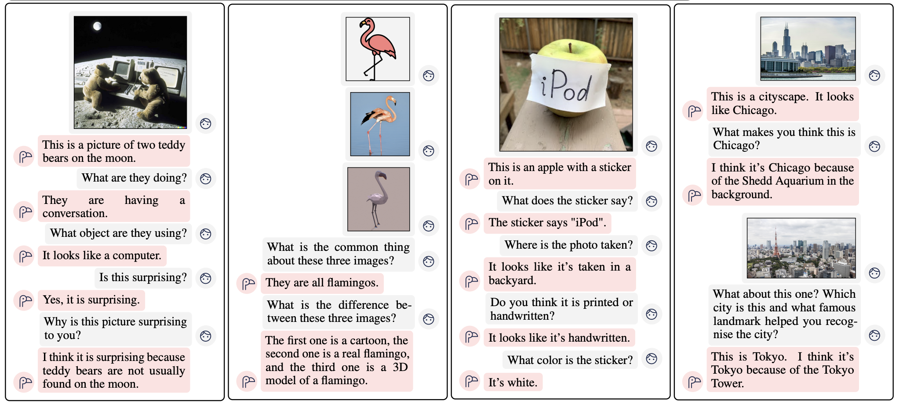
We have:
How to connect them?
Can we naively concatenate them:
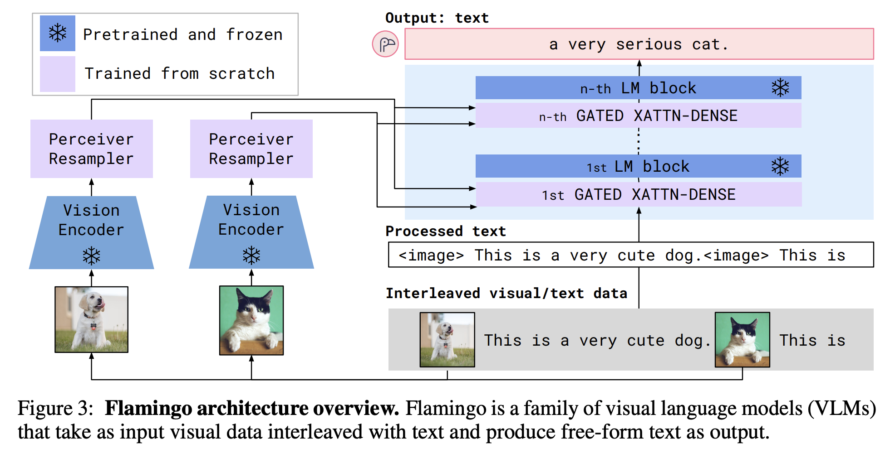
Pros: LLM mostly frozen; supports interleaved images-and-text in long contexts (few-shot in-context multimodal prompting).
Cons: Heavy architectural modifications on the LLM, hard to extend to a new modality, lots of new parameters.
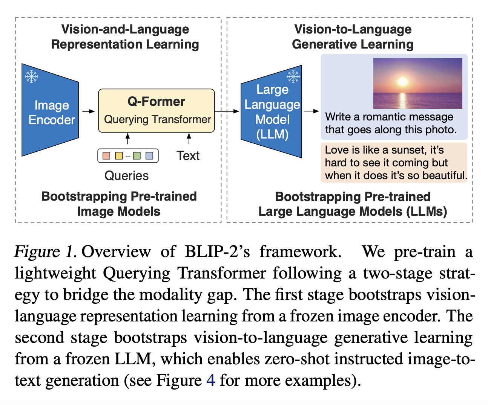
A small transformer (“Querying Transformer”) with \(k\) learnable query tokens (typically 32).
The Q-Former cross-attends to the ViT output and produces 32 summary vectors regardless of input image size.
These 32 vectors are linearly projected to LLM dim and prepended to text tokens.
Trains ~188M params (the Q-Former). Vision encoder (~1B ViT-g) and LLM (3–11B) frozen.
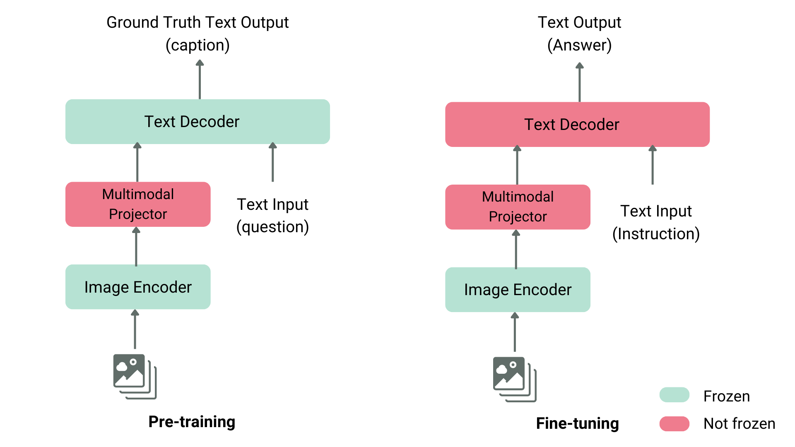
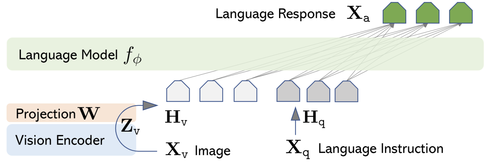
Template used by most VLMs:
import torch, torch.nn as nn
class MiniVLM(nn.Module):
"""A LLaVA-style multimodal LLM"""
def __init__(self, vision_encoder, llm, vis_dim, llm_dim):
super().__init__()
self.vision = vision_encoder # SigLIP, frozen
self.proj = nn.Sequential( # the MLP projector
nn.Linear(vis_dim, llm_dim),
nn.GELU(),
nn.Linear(llm_dim, llm_dim),
)
self.llm = llm # Llama-style decoder
def forward(self, pixel_values, input_ids, image_token_id):
# 1. Encode the image
vis = self.vision(pixel_values).last_hidden_state # [B, N_patches, vis_dim]
vis = self.proj(vis) # [B, N_patches, llm_dim]
# 2. Get text embeddings
txt = self.llm.embed_tokens(input_ids) # [B, N_text, llm_dim]
# 3. Splice vis vectors in where the <image> placeholder sits
x = splice_image_at_placeholder(txt, vis, input_ids, image_token_id)
# 4. Standard LLM forward pass on the joint sequence
return self.llm(inputs_embeds=x)
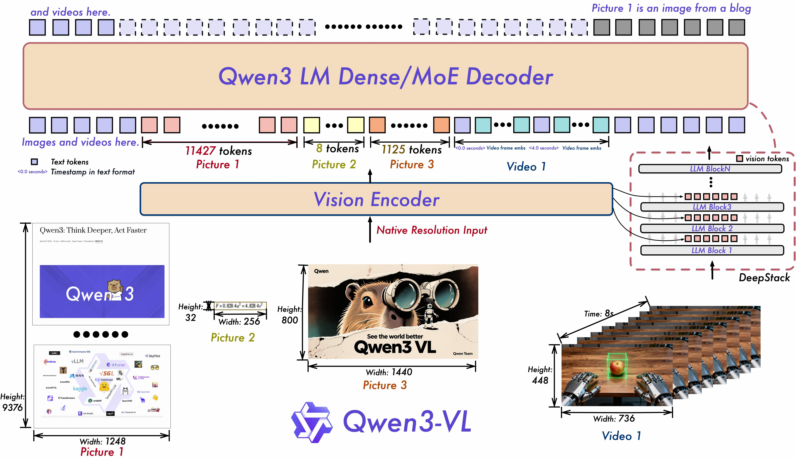
Architecture
Capabilities (training-data choices)
<|box_start|>(x1,y1),(x2,y2)<|box_end|>. This is a vocabulary + training data choice, not an architecture change| Qwen3-VL | Gemma 3 | |
|---|---|---|
| Vision encoder | SigLIP-2, native dynamic resolution | SigLIP-400M, fixed 896² + pan-and-scan |
| Tokens per image | Variable (64 -> 16K+) | 256 fixed (× number of P&S crops) |
| Position embeddings | Enhanced interleaved M-RoPE | Standard RoPE, per-modality |
| Context | 256K (-> 1M) | 128K |
| Optimized for | Documents, agents, long video | On-device, predictable inference cost |
| Vision encoder during training | Continued training | Frozen |
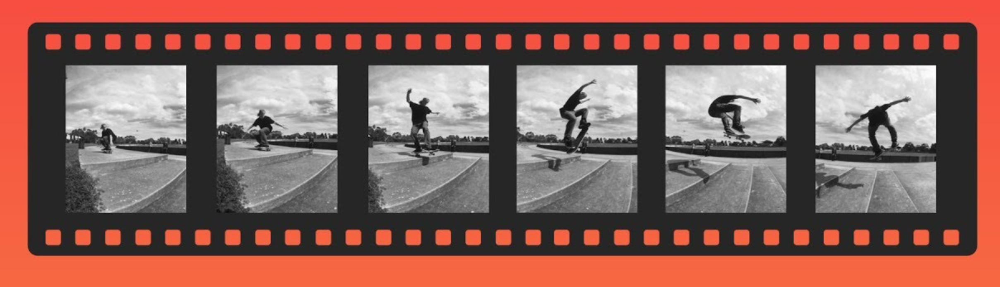
Video = image + one more dimension.
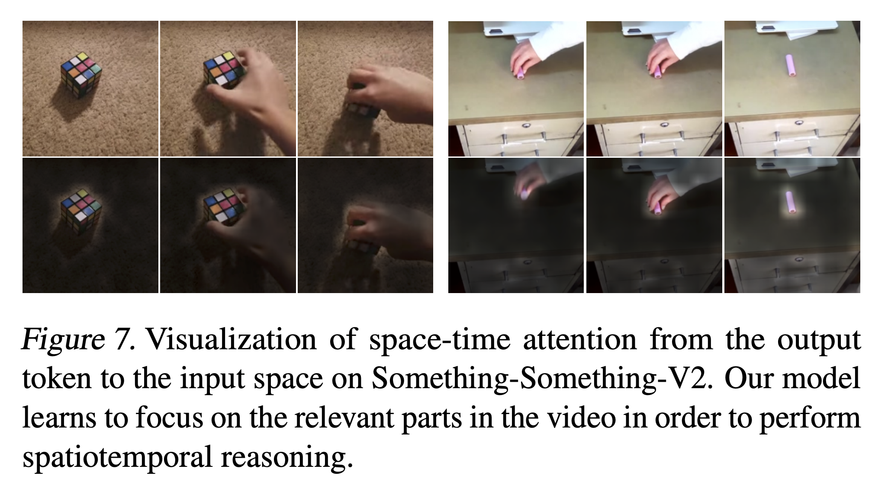
Is Space-Time Attention All You Need for Video Understanding?
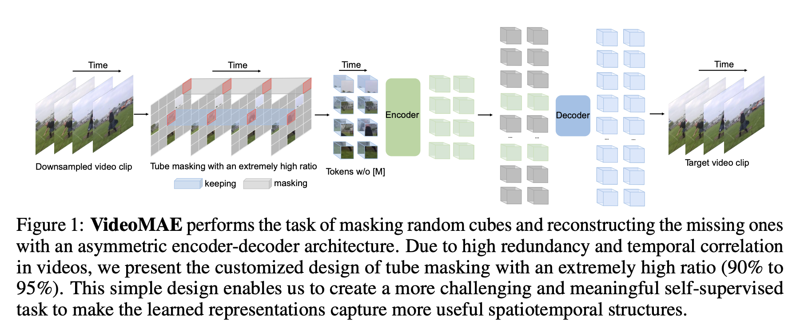
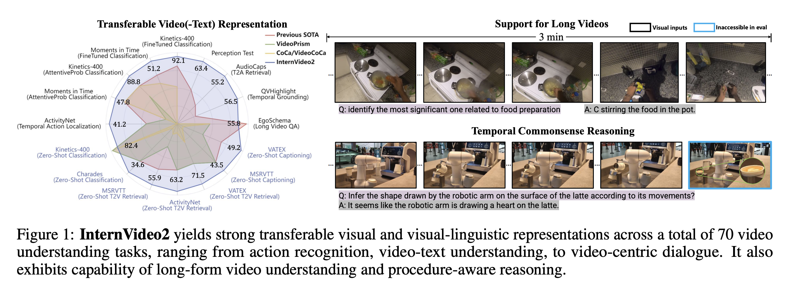
InternVideo2: Scaling Foundation Models for Multimodal Video Understanding
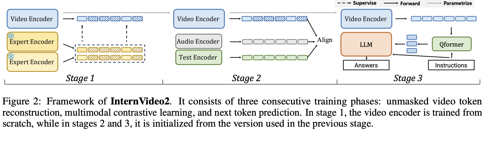
Masked Video Modeling (Stage 1) - The video encoder is trained with a masked video token reconstruction task (analogous to VideoMAE), model learns spatiotemporal structures
Crossmodal Contrastive Learning (Stage 2) - Next, InternVideo2 aligns video representations with other modalities
LLM Integration via QFormer (Stage 3) - In the final stage, InternVideo2 connects with a Large Language Model to enable reasoning and generation based on video input via a Q-Former module (inspired by BLIP-2 style architectures)
Demo
We want to know :
image_to_vectors: Image → R^{N×d}audio_to_vectors: Audio → R^{N×d}video_to_vectors: Video → R^{N×d}Go from Text LLM to Multimodal LLM by adding three components:
| Problem | Image | Audio |
|---|---|---|
| Encode | ViT (patchify pixels) | Whisper / AuT (spectrogram + conv + transformer) |
| Align | CLIP / SigLIP contrastive pretraining | Supervised ASR pretraining |
| Fuse | MLP projector + concat (LLaVA) | MLP projector + concat (Qwen Audio) |
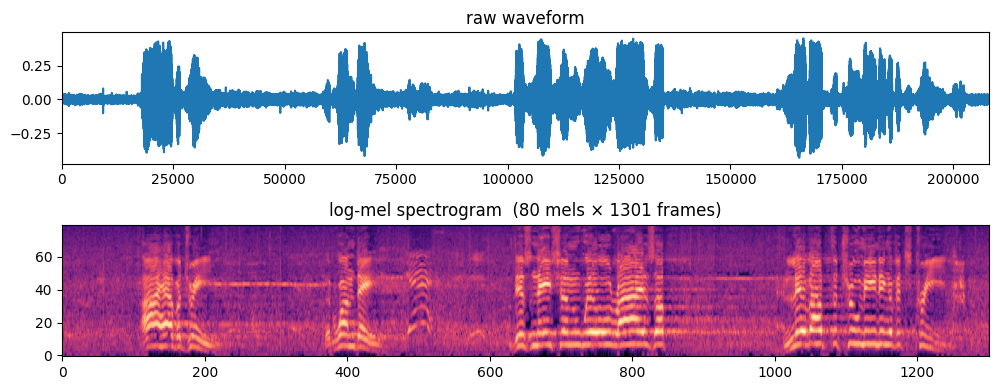
Slide a 25 ms window over the waveform with a 10 ms stride.
For each window, compute the power spectrum, then apply 80 mel filterbanks (perceptually-spaced frequency bins).
Take the log.
Result: a 2D matrix of shape [80 mel bins, ~3000 time frames] per 30-second clip.
A spectrogram looks like an image: width is time, height is frequency, intensity is energy. The same encoder ideas that worked for ViT should work here
| Problem | Audio answer |
|---|---|
| Encode | Spectrogram -> conv stack -> transformer (Whisper) |
| Align | Supervised on (audio, transcript) pairs -> not contrastive! (except CLAP) |
| Fuse | Same MLP projector + concat pattern as LLaVA |
ViT for audio
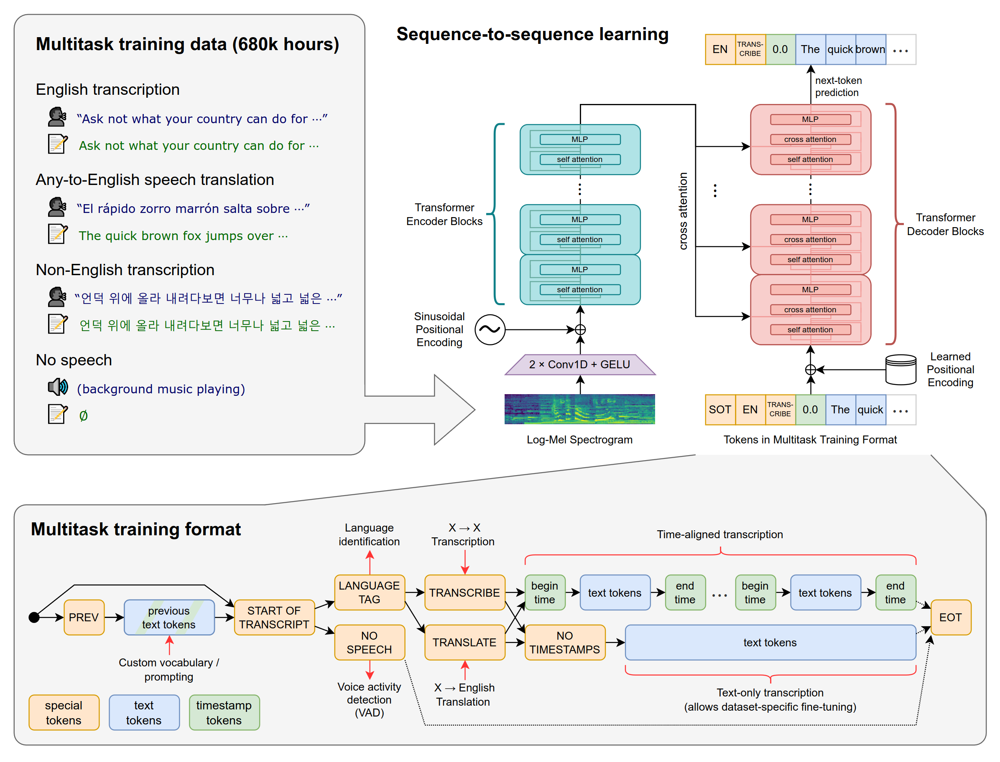
Input: log-mel spectrogram of shape [80, 3000] (30 seconds @ 16 kHz).
Stem: two Conv1d layers over the time axis (kernel=3, stride=2 on the second). This is the audio analog of ViT’s patchify. Halves the time dimension.
Output of stem: [1500, d] - a sequence of 1500 audio “patches” (each = 20 ms of audio).
Encoder: standard transformer with sinusoidal positional embeddings.
Decoder (Whisper-specific): transformer decoder that cross-attends to encoder output and produces text tokens (BPE, same as GPT-2). Predicts language ID + transcription + timestamps via special tokens.
| ViT | Whisper encoder | |
|---|---|---|
| Input | RGB image [H, W, 3] |
Log-mel spectrogram [80, 3000] |
| Stem | Conv2d patchify | Two Conv1d layers |
| Patch / frame | 14×14 pixel patch | 20 ms audio window |
| Output | \(N_\text{patches}\) vectors | 1500 vectors (per 30s) |
| Pre-training data | (image, caption) pairs | (audio, transcript) pairs |
| Alignment | Contrastive (CLIP) | Supervised ASR |
Architecture: Whisper-style encoder + Qwen LLM + MLP projector. Exactly the LLaVA recipe, with Whisper in place of CLIP/SigLIP
Training: same two-stage recipe (align projector -> instruction tune).
Tasks: transcription, translation, music description, ambient sound classification, spoken Q&A, paralinguistic queries (“what emotion is the speaker conveying?”).
LLaVA ┌─ CLIP/SigLIP ─┐
│ (vision) │
└───┬───────────┘
│
▼
[MLP projector]
│
▼
[Llama / Qwen] ─→ text output
Qwen2-Audio ┌─ Whisper enc. ┐
│ (audio) │
└───┬───────────┘
│
▼
[MLP projector]
│
▼
[Qwen LLM] ─→ text outputTask : How to autoregressively generate a waveform?
Solution : discrete audio codec tokens
A neural audio codec (e.g., EnCodec, SoundStream) compresses raw audio into a small sequence of discrete tokens (~50-75 tokens/second) using a learned VQ-VAE-style tokenizer.
A neural vocoder reverses the process: discrete tokens -> waveform.
Once audio is discrete, an autoregressive LLM can generate it just like text.
Inputs: text, image, video, audio -> each encoded by its respective tower, projected, and concatenated. Same fusion pattern as everything we’ve seen.
Audio encoder: Qwen3-Omni replaced Whisper with AuT (Audio Transformer) -> trained from scratch on 20 million hours of supervised audio
Two sub-models on the output side, both MoE:
Talker conditions only on audio and visual multimodal features -> not on Thinker’s text representations. Allows post processing of text output (e.g., add prosody, emotion) before generating speech.
For text LLM chat: - Prompt is usually short (100s–1000s of tokens). Decode dominates wallclock. - TTFT (time-to-first-token) is small relative to total response time.
For multimodal: A 7B VLM
Input : single 2048×1536 image, 50-token query
Vision tokens: ~1500. Total prefill tokens: ~1550.
Input : 4K page (e.g., a document) + 50 token query
Vision tokens: 10,000+. Total prefill tokens: 10,050+
Prefill becomes the bottleneck.
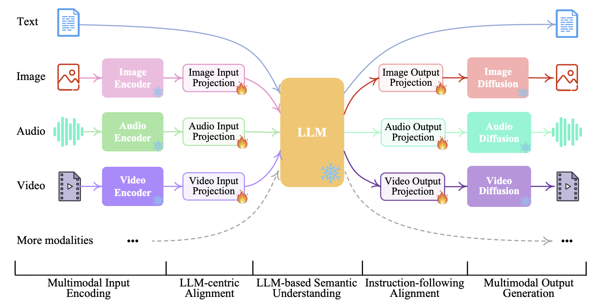
| Problem | Image | Audio |
|---|---|---|
| Encode | ViT (patchify pixels) | Whisper / AuT (spectrogram + conv + transformer) |
| Align | CLIP / SigLIP contrastive | Supervised ASR pretraining |
| Fuse | MLP projector + concat | MLP projector + concat (same!) |
| Output | text | text + discrete codec tokens (Talker) |